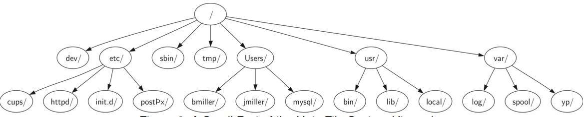

Tree
目标
- · 理解树的数据结构及其使用方法；
- · 树用于实现 ADT Map；
- · 用列表来实现树；
- · 用类和引用来实现树；
- · 以递归数据结构实现树；
- · 用堆来实现优先队列；
树在计算机科学的各个领域中被广泛应用，包括操作系统，图形学，数据库系统和计算机网络。树结构和自然界的树有许多相似的地方，也有根、枝和叶，它们的不同之处在于计算机中的树结构根在顶部而叶子则在底部。
树结构的几个性质：
- 树是分层的
- 一个节点（node）的所有子节点（children）和另一个节点的子节点是完全独立的
- 每个叶节点（leaf）都是不同的
- 你可以将树下层的所有部分（叫做子树 subtree）移动到树的另一位置而不影响更下层的情况，这是由树的分层性决定的。例如，我们可以将所有标注/etc的子树从根节点下移动到usr/下面。这样做会将httpd的路径从/etc/httpd改变成/usr/etc/httpd，但是对httpd的内容及其子节点的内容不会有影响。

几个典型树结构的例子 | |
生物学中的分类树 | |
文件系统 | 在一个文件系统中，磁盘的分支或者文件夹构建成了一棵树 |
一个网页 | 树的每一层都对应 超文本标记符的一层嵌套。 |

术语名词 | |
节点（Node） | 基本构成部分 一个节点可能有更多的信息，我们称之为“负载（payload）” |
边（Edge） | 边连接两个节点，并表示它们之间存在联系 入边：节点（除了根节点）都有且只有一条 出边：每个节点可能有许多条出边（从该节点指向其他节点的边） |
根节点（Root） | 树中唯一一个没有入边的节点 |
路径（Path） | 由边连接起来的节点的有序排列 例如：动物界 → 脊索动物门 → 哺乳动物纲 → 食肉动物目 → 猫科 → 猫属 → 家猫 就是一条路径。 |
子节点 | 当一个节点的入边来自另一个节点时，我们称前者是后者的子节点 |
子节点集（Children） | 同一个节点的所有子节点构成子节点集 |
父节点（Parent） | 一个节点是它的出边所连接的所有节点的父节点 |
兄弟节点（Sibling） | 同一个节点的所有子节点互为兄弟节点 |
子树（Subtree） | 子树是一个父节点的某个子节点的所有边和后代节点所构成的集合。 |
叶节点（Leaf Node） | 没有子节点的节点成为称为叶节点 |
层数（Level） | 一个节点的层数是指从根节点到该节点的路径中的边的数目 |
高度（Height） | 树的高度等于所有节点的层数的最大值。 |
图6.4展示了一个符合定义一的树，每条边的箭头指出了连接的方向；

图6. 4 由节点和边构成的树
binary tree
二叉树编程实现
class TreeNode:
def __init__(self, val):
self.val = val
self.left, self.right = None, None
#############################################################
"""遍历类的方法"""
#############################################################
class Traversal(object):
def __init__(self):
self.teaverse_path = list()
def preorder(self, root):
if root:
self.traverse_path.append(root.val)
self.preorder(root.left)
self.preorder(root.right)
def inorder(self, root):
if root:
self.inorder(root.left)
self.traverse_path.append(root.val)
self.inorder(root.right)
def postorder(self, root):
if root:
self.postorder(root.left)
self.postorder(root.right)
self.traverse_path.append(root.val)
Binary Search Tree - 二叉查找树
一颗二叉查找树(BST)是一颗二叉树，其中每个节点都含有一个可进行比较的键及相应的值，且每个节点的键都大于等于左子树中的任意节点的键，而小于右子树中的任意节点的键。
使用中序遍历可得到有序数组，这是二叉查找树的又一个重要特征。
二叉查找树使用的每个节点含有两个链接，它是将链表插入的灵活性和有序数组查找的高效性结合起来的高效符号表实现。